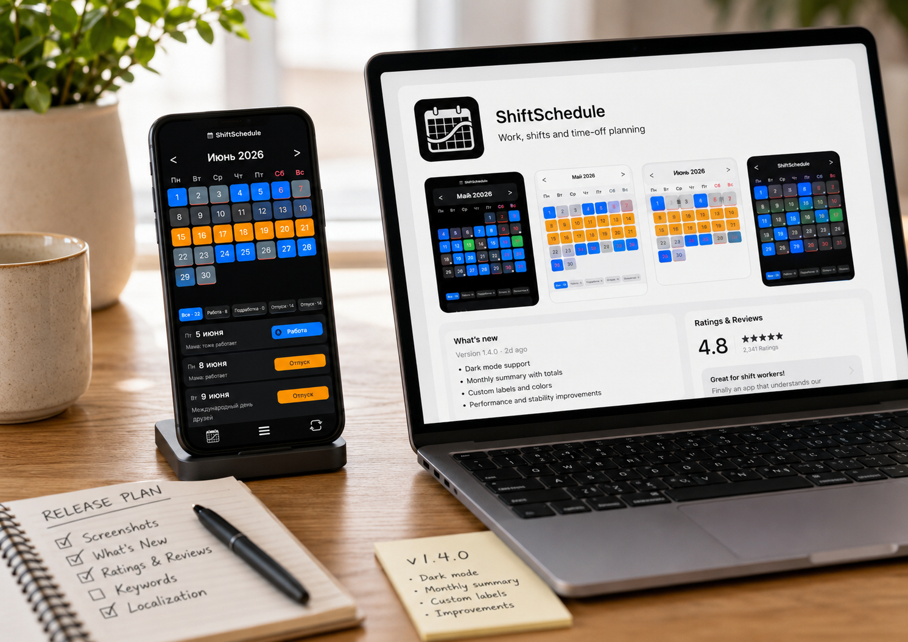
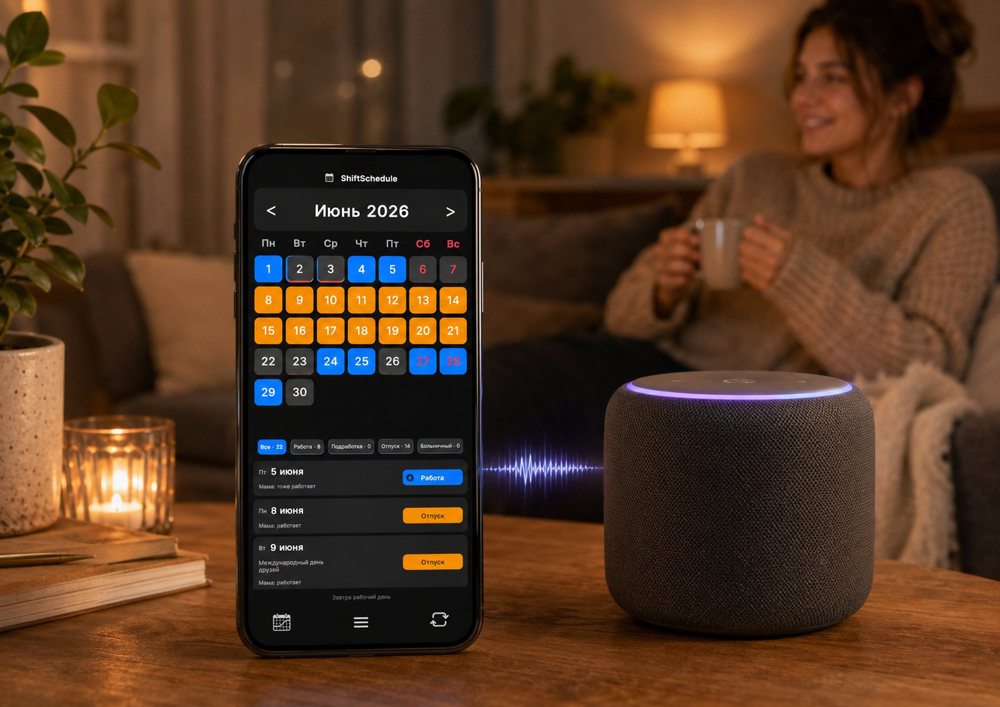
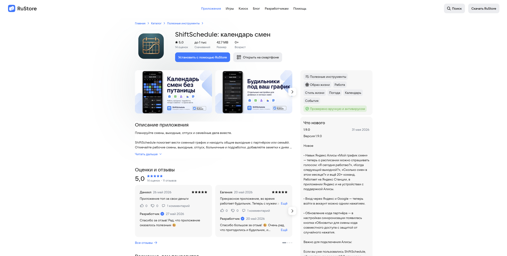

Когда приложение готово, начинается другая работа. Та, к которой разработчик обычно не готов.
Я не маркетолог. У меня нет рекламного бюджета, команды продвижения и человека, который будет красиво упаковывать каждый релиз.
Зато есть приложение ShiftSchedule — календарь смен для Android — и несколько месяцев проб, ошибок и неожиданных открытий.
Писать код оказалось проще, чем найти первых пользователей.
Начал с того, что умею: с текста
Первое, что я сделал — начал писать статьи.
Не рекламные посты в стиле "скачайте моё приложение", а обычные полезные материалы. О том, как считать сменный график, чем отличается график 2/2 от графика 3/3, как устроена работа день/ночь, что делать с графиком сутки через трое и почему людям со сменной работой так сложно планировать обычную жизнь.
Люди каждый день вбивают такие запросы в поиск. Если статья отвечает на реальный вопрос, она может жить долго. Не день, не два, а месяцами. Ты уже забыл, что писал её, а она всё ещё приводит кого-то на сайт или в приложение.
Это не быстрый способ продвижения. Первое время — почти тишина. Но статья про календарь смен, будильники перед сменой или общие выходные с партнёром работает как тихий менеджер: без криков, без рекламы, но постоянно.
Сейчас я всё больше понимаю, что для маленького приложения это один из самых честных способов продвижения. Не пытаться орать громче всех, а отвечать на конкретные вопросы конкретных людей.
Большие площадки и реальность маленького проекта
Я пробовал публиковаться на крупных площадках — DTF и Пикабу.
Написал несколько статей. Где-то они получили просмотры, где-то комментарии, где-то люди действительно переходили и интересовались приложением. Для начинающего проекта это очень ценно: наконец-то появляется ощущение, что ты не просто выкладываешь обновления в пустоту.
Но довольно быстро стало понятно, что у больших площадок свои правила. Если материал связан с твоим продуктом, его легко могут посчитать рекламой. А дальше выбор простой: либо ограничения, либо платное продвижение.
Для большого бизнеса это нормальная механика. Компания платит за охваты, получает показы, считает эффективность. Всё понятно.
Но для одиночного разработчика на старте сумма в десятки тысяч рублей в месяц выглядит иначе. Особенно когда приложение только начинает продаваться, пользователей мало, а каждая покупка — это скорее подтверждение, что ты движешься в правильную сторону, чем реальная окупаемость.
Я не спорю с площадками. У них свои правила, у меня свои возможности. Просто пришлось принять: строить продвижение только на чужих алгоритмах нельзя.
Где пишу сейчас
Сейчас пробую несколько направлений.
В Дзене веду канал и постепенно переоформляю его под ShiftSchedule, сменные графики и разработку приложения. Там пока тихо, но я не жду мгновенного результата. Старый канал раньше был на другую тему, поэтому алгоритмам нужно время, чтобы понять новую аудиторию.
На VC.ru пробую формат личного опыта: как один человек делает Android-приложение, продвигает его, сталкивается с RuStore, Алисой, пользователями, SEO и всем остальным, что обычно не видно за кнопкой "скачать".
В VK, Telegram и MAX публикую короткие новости: обновления, новые функции, заметки по разработке. Это больше связь с теми, кто уже интересуется проектом.
На 4PDA есть страница приложения. Это отдельный мир со своими правилами, но для Android-приложения такая площадка важна. Там люди умеют задавать конкретные вопросы, проверять APK, замечать мелочи и говорить прямо.
И главное — собственный сайт.
Сайт оказался самым важным
Со временем я понял: сайт — это единственное место, где никто не может обрезать охваты, скрыть пост, поменять правила или решить, что сегодня твоя публикация "слишком рекламная".
На сайте можно нормально объяснить, что такое ShiftSchedule, для кого оно, какие графики поддерживает, как работает партнёрский режим, как включить синхронизацию, где скачать приложение и что нового появилось.
Сейчас я постепенно собираю всё вокруг сайта: статьи, инструкции, FAQ, описание функций, ссылки на RuStore и APK.
Это медленнее, чем купить рекламу. Зато каждый материал остаётся работать дальше.

Сайт стал центром проекта: там собраны описание приложения, инструкции, FAQ и ссылки для скачивания.
Разобрался, как показаться поисковикам
Есть отдельный этап, о котором я раньше почти не думал: нужно объяснить Яндексу и Google, что твой сайт существует и ты за него отвечаешь.
Звучит странно, но без этого сайт как будто стоит в лесу. Он есть, ты его видишь, ссылку можешь отправить. Но поисковики могут долго не понимать, что с ним делать.
Я подключил Яндекс.Вебмастер, Google Search Console, Метрику, проверил sitemap и robots.txt. Потом подключал Дзен к сайту.
Последнее особенно запомнилось: нужно было загрузить специальный файл на сайт, чтобы Яндекс убедился, что сайт действительно мой. Загрузил — ошибка. Проверил — опечатка в одном символе. Исправил, подождал пару минут. Сработало.
Полчаса на то, что могло занять две минуты. Классика.
Алиса — неожиданный канал
Одна из самых странных и одновременно приятных идей — сделать навык для Яндекс Алисы.
Сценарий простой: человек спрашивает колонку или телефон "когда я работаю?" — и получает ответ из ShiftSchedule.
Я думал, это займёт день. В худшем случае пару вечеров.
Заняло недели.
Модерация Яндекса отклонила навык два раза подряд. Первый раз я честно злился. Второй раз уже смеялся сквозь зубы: ну как, второй раз подряд, серьёзно?
К третьей попытке просто методично исправлял каждый пункт из письма. Команды, подсказки, помощь, сценарии, формулировки. В итоге навык одобрили.
Теперь ShiftSchedule можно использовать не только как приложение, но и через голосовой помощник. Можно спросить: "Алиса, спроси у навыка Мой график смен, работаю ли я завтра?"
Для маленького приложения это необычный канал. Не массовый, не волшебный, но живой. И точно выделяет проект среди обычных календарей смен.

Навык Алисы стал отдельным экспериментом: простая идея неожиданно превратилась в недели правок и модераций.
RuStore — магазин со своими правилами
Отдельная часть продвижения — RuStore.
Мало просто загрузить APK и ждать. Нужно следить за описанием, скриншотами, разделом "Что нового", ключевыми словами, отзывами, обновлениями и тем, как выглядит карточка приложения.
Каждая мелочь влияет на то, пройдёт ли пользователь мимо или хотя бы откроет страницу.
Я постепенно понял, что карточка приложения — это почти отдельный лендинг. Первые скриншоты, описание, название функций, упоминание графиков 2/2, 3/3, день/ночь, суток через трое, партнёрского режима, будильников, облака и Алисы — всё это важно.
Здесь нет волшебной кнопки. Просто аккуратность и регулярность.

Карточка приложения в магазине — это тоже часть продвижения: описание, скриншоты и каждое обновление влияют на первое впечатление.
Что реально сработало
Пока рано делать большие выводы, но уже видно несколько вещей.
Людям интереснее не функция сама по себе, а проблема, которую она решает.
Что впереди
Хочу писать крупным компаниям — Яндексу, Сберу, возможно, другим сервисам. Не уверен, что ответят, но не попробуешь — не узнаешь.
Планировал подать заявку на грант, но не успел до дедлайна. Значит, попробую позже, когда проект станет сильнее и понятнее.
Ещё хочу развивать сайт: отдельные страницы под график 2/2, сутки через трое, день/ночь, общие выходные с партнёром, будильники, Алису и синхронизацию. Это не самый быстрый путь, но он кажется самым устойчивым.
Продвижение без бюджета — это медленно
Честно: продвигать приложение без бюджета — медленно. Очень медленно.
Иногда обидно. Особенно когда ты тратишь вечера на статью, а площадка даёт ей пару сотен показов. Или когда пост считают рекламой просто потому, что ты честно рассказываешь о своём продукте.
Но у этого пути есть одно важное свойство: всё, что ты построил, остаётся с тобой.
Статья на сайте. Пост в Дзене. Тема на 4PDA. Страница в RuStore. Ответ пользователю. Инструкция. Обновление. Новый скриншот. Новый релиз.
По отдельности это мелочи. Вместе — система.
Соло-разработчик не может конкурировать деньгами. Зато может конкурировать конкретностью.
Писать не "для всех", а для конкретных людей. В моём случае — для тех, кто работает по сменному графику, считает дни 2/2, 3/3, день/ночь, сутки через трое, пытается не проспать смену, не потерять расписание и найти общий выходной с близким человеком.
ShiftSchedule как раз про это.
А дальше — терпение, новые статьи, новые обновления и немного чувства юмора. Особенно после второго отказа модерации.